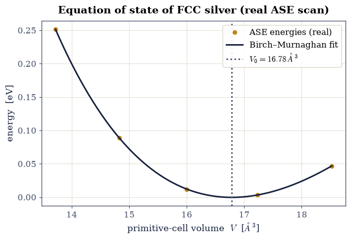
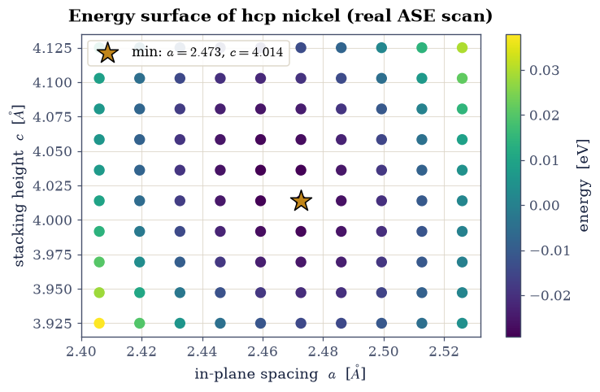
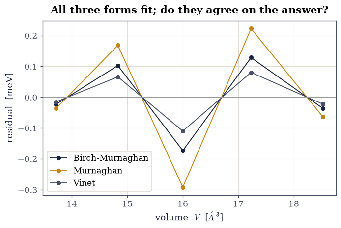
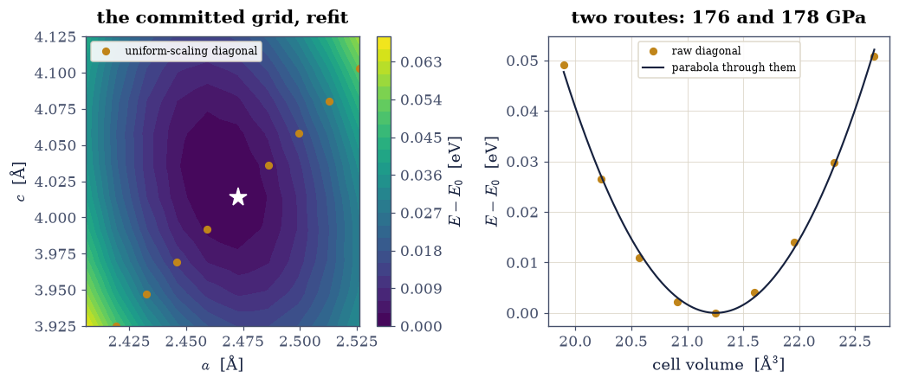
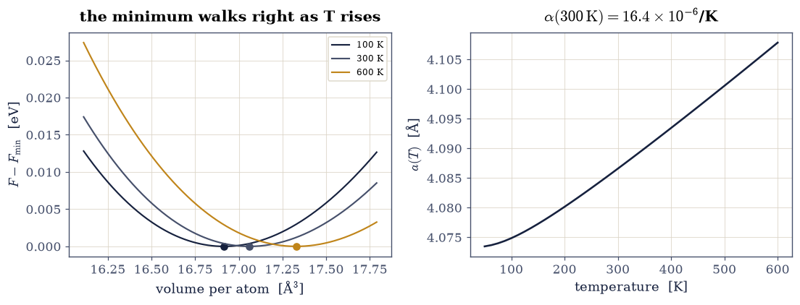

5.1 Lattice Constants from an Equation of State#
Notebook overview#
How big is a crystal? Its lattice constant is not an input to a calculation but an output: the cell size that minimises the total energy. Squeeze the cell and the atoms repel; stretch it and the bonds weaken; in between lies the equilibrium volume, and the curvature of the energy there is the bulk modulus, the crystal’s resistance to compression. This is the first thing any electronic-structure code is asked to reproduce, and the first exercise of the course.
We work through it with the Atomic Simulation Environment (ASE), exactly the tool the course introduced here, and the course’s own committed results. We compute the atomization energy of an N₂ molecule, fit an equation of state to the real energy-volume scan of face-centred-cubic silver to extract its lattice constant and bulk modulus, and map the energy of hexagonal-close-packed nickel over its two lattice parameters \(a\) and \(c\) to find both at once.
Provenance. This notebook develops Lecture 1 of the course (the Atomic Simulation Environment, crystal structures, and equations of state), an exercise designed by the author (Raymond Amador). The silver and nickel energies are the course’s own committed ASE trajectories (
Ag-eos.traj,Ni-ac-scan.traj), computed with the EMT effective-medium calculator; the N₂ atomization is reproduced here with the same calculator. The full course credit is in the footer.
Reading a validation. Each task closes with a check against an independent fact: the known lattice constant of silver, the ideal axial ratio of a close-packed lattice. A ✗ flags a mismatch to track down; a ✓ is strong evidence, not proof.
Scope. Energies use the EMT calculator, a fast classical approximation built into ASE; it captures the trends and gives lattice constants within a per cent or two, where a full density-functional calculation would be quantitative but far slower. For ASE see [HLJorgenMB+17]; for the equation of state, Birch [Bir47].
Theory in brief#
The equation of state#
The energy of a crystal as a function of its volume \(V\), the equation of state, has a minimum at the equilibrium volume \(V_0\). Near it the energy is parabolic, and the curvature defines the bulk modulus
the pressure needed to change the volume by a given fraction. Real solids are not perfectly parabolic, so we fit the Birch-Murnaghan equation of state [Bir47], a low-order expansion in strain rather than in volume. The natural variable is the Eulerian strain \(f=\tfrac12[(V_0/V)^{2/3}-1]\), which vanishes at equilibrium; expanding the energy to third order in \(f\) and rearranging gives
with four parameters: the equilibrium volume \(V_0\) and energy \(E_0\), the bulk modulus \(B_0\), and its pressure derivative \(B_0'\). Strain is the right expansion variable because a solid stiffens under compression and softens under expansion, an asymmetry a polynomial in \(V\) reproduces only badly. Two other forms are in common use — Murnaghan, which assumes \(B\) varies linearly with pressure, and Vinet [VRFS89], built for large compressions — and Exercise 4 asks whether the choice between them matters. For a cubic crystal the lattice constant follows from \(V_0\) and the number of atoms per cell.
Close-packed lattices and the axial ratio#
A cubic crystal has a single lattice constant, but a hexagonal-close-packed crystal has two, \(a\) in the basal plane and \(c\) along the stacking axis, so its energy must be minimised over a two-dimensional grid. For ideal close packing of hard spheres the ratio is fixed at
and how close a real metal sits to this value measures how nearly its bonding is isotropic.
Setup#
The Setup below holds this notebook’s data and instruments — nothing you are asked to build. It is collapsed so the building stays yours; expand it whenever you want the details.
Exercise 1 — ASE and the atomization energy of N₂#
The course opened with the Atomic Simulation Environment: build an atomic structure, attach a calculator, ask for the energy. The first physical quantity is the atomization energy of a nitrogen molecule, the energy released when two nitrogen atoms bond,
positive because the molecule is more stable than the separated atoms. We relax the molecule to its bond length, then compare to two isolated atoms, all with the EMT calculator. N₂ is famously hard to pull apart (its triple bond is one of the strongest in chemistry), so the atomization energy is large.
Part a) Build and relax N₂, and an isolated N atom, with EMT.
Part b) Compute the atomization energy and confirm it is large and positive.
E(N2) = 0.263 eV, E(N) = 5.100 eV -> atomization energy = 9.94 eV
relaxed N-N bond length = 0.998 Å (experiment 1.098 Å)
Validation 1 — the molecule is bound#
Atomization must cost energy: \(2E(\mathrm N)-E(\mathrm N_2)>0\), and for the triple-bonded N₂ it is several eV.
✓ N₂ is strongly bound (large positive atomization energy) [atomization energy = 9.94 eV, bond length 0.998 Å]
True
Exercise 2 — The equation of state of FCC silver#
Now a crystal. The course scanned the volume of face-centred-cubic silver, computing
the total energy at each, and committed the result as Ag-eos.traj. We load that real
energy-volume curve, fit the Birch-Murnaghan equation of state, and
read off the equilibrium volume, the lattice constant, and the bulk modulus Eq. 41. For FCC
there are four atoms in the conventional cubic cell, so the lattice constant is
\(a=(4V_0)^{1/3}\) from the per-atom volume \(V_0\).
Part a) Implement birch_murnaghan(V, V0, E0, B0, Bp) from
Eq. 42. It is a four-parameter nonlinear model, so it cannot be
fitted by numpy.polyfit; that is the whole reason this exercise exists.
Write this one yourself — the implementation is the lesson.
Part b) Fit it to the committed \(E(V)\) data with
scipy.optimize.curve_fit. A nonlinear fit needs a starting guess, and a bad one
converges to nonsense rather than failing loudly, so build the guess rather than
inventing it: fit a parabola with numpy.polyfit(V, E, 2) first, and read \(V_0\),
\(E_0\) and \(B_0 = V_0\,d^2E/dV^2\) off it. Take \(B_0' = 4\), the usual default.
Part c) curve_fit returns the parameter covariance matrix as its second
output. Its diagonal square roots are the one-sigma uncertainties: report \(V_0\),
\(B_0\) and the lattice constant \(a=(4V_0)^{1/3}\) each with an error bar, propagating
to \(a\) by \(\delta a = (4^{1/3}/3)\,V_0^{-2/3}\,\delta V_0\). Then read the honest
caveat printed underneath: five data points and four parameters leave one degree of
freedom, so these uncertainties describe the fit, not the physics.
Part d) Compare with experiment, and cross-check the whole fit against ASE’s
own EquationOfState, an implementation written by other people. Agreement there
is a real check on your algebra; agreement with experiment is a check on the EMT
calculator that produced the data, which is a different question entirely.

Fig. 51 Equation of state of face-centred-cubic silver from the course’s committed ASE scan: total energy (eV) versus primitive-cell volume (points), with the Birch-Murnaghan fit (curve). The minimum gives the equilibrium volume, hence the lattice constant \(a=4.06\) Å (experiment 4.09 Å); the curvature gives the bulk modulus \(B=100\) GPa (experiment ~100 GPa).#
V0 = 16.7825 ± 0.0034 ų B0 = 100.04 ± 0.50 GPa B' = 4.44
a(Ag) = 4.0642 ± 0.0003 Å (experiment 4.09 Å)
ASE EquationOfState: V0 = 16.7825 ų, B0 = 100.04 GPa
degrees of freedom = 5 points - 4 parameters = 1;
with one degree of freedom these error bars describe the FIT, not the physics.
Validation 2 — silver’s lattice constant and bulk modulus#
The fit must recover silver’s measured lattice constant, \(a\approx4.09\,\)Å, and a bulk modulus near the experimental \(\sim100\,\)GPa.
✓ the fitted lattice constant matches silver's measured value [got 4.06418 vs expected 4.09 (rtol=0.02, atol=1e-09)]
✓ the bulk modulus is in the right range for silver [B = 100.0 ± 0.5 GPa (experiment ~100 GPa)]
✓ and the hand-built fit reproduces ASE's own EquationOfState to six figures: the algebra of eq-birch-murnaghan and the optimiser are both correct [max|Δ| = 5.03263e-10 (rtol=1e-05, atol=1e-09)]
True
Exercise 3 — Two lattice parameters: hexagonal nickel#
A cubic crystal needs one number; a hexagonal-close-packed crystal needs two, the
in-plane spacing \(a\) and the stacking height \(c\). The course scanned both on a grid
and committed the result as Ni-ac-scan.traj (a \(10\times10\) mesh in \(a\) and \(c\)). We load
it, map the energy surface, and find the minimum to read off both lattice constants
at once. Their ratio \(c/a\) should land near the ideal close-packed value
\(\sqrt{8/3}\approx1.633\) Eq. 43.
Part a) Load Ni-ac-scan.traj and plot the energy over the \((a,c)\) grid.
Part b) Locate the minimum and confirm the axial ratio is near ideal.

Fig. 52 Energy surface of hexagonal-close-packed nickel over its two lattice parameters, from a committed \(10\times10\) EMT scan that brackets the energy minimum: energy (colour) versus in-plane spacing \(a\) and stacking height \(c\). The interior minimum (amber marker) sits at \(a\approx2.47\) Å and \(c\approx4.01\) Å, an axial ratio \(c/a\approx1.623\) — within 0.6 per cent of the ideal close-packed value \(\sqrt{8/3}=1.633\), which is the point: EMT nickel finds the close-packed ratio without being told it.#
a(Ni) = 2.473 Å (exp 2.49), c = 4.014 Å (exp 4.07); c/a = 1.623 (ideal 1.633)
Validation 3 — the ideal close-packed axial ratio#
Nickel is very nearly an ideal close-packed metal, so the minimum-energy axial ratio must sit at \(c/a=\sqrt{8/3}\approx1.633\).
✓ the hcp axial ratio c/a is at the ideal close-packed value [got 1.6233 vs expected 1.63299 (rtol=0.02, atol=1e-09)]
True
Exercise 4 — Does the choice of equation of state matter?#
Exercise 2 fitted one functional form and read two numbers off it. That should make anyone slightly uneasy. Birch-Murnaghan is not derived from first principles; it is a truncated expansion, and two other truncations are in equally common use. If the lattice constant and bulk modulus we quote depend on which of them we picked, they are artefacts of the fitting rather than properties of silver.
So test it. The Murnaghan form assumes the bulk modulus rises linearly with pressure,
while the Vinet form is built from an interatomic potential of universal shape and is the standard choice at large compressions,
Part a) Implement both forms and fit each to the same data with the same parabola-derived starting guess. Watch the signs: an algebra slip in either expression does not raise, it simply converges somewhere meaningless, and the first symptom is a negative bulk modulus. Write this one yourself — the implementation is the lesson.
Part b) Tabulate \(V_0\), \(B_0\) and \(a\) from all three forms with their root-mean-square residuals, and plot the residuals against volume on a shared axis. Ask two separate questions of the numbers: do the forms agree on the observables, and do they differ in how well they fit?
Part c) Draw the conclusion. Agreement to a fraction of a percent across three unrelated functional forms is what licenses quoting a lattice constant from a fit at all — and it is a stronger statement than any single fit’s error bar, because it probes a systematic the error bar cannot see.
form V0 [A^3] B0 [GPa] B0p a [A] rms [eV]
Birch-Murnaghan 16.7825 ± 0.0034 100.04 ± 0.50 4.44 4.0642 1.08e-04
Murnaghan 16.7884 ± 0.0055 99.71 ± 0.85 4.22 4.0647 1.83e-04
Vinet 16.7795 ± 0.0022 100.22 ± 0.31 4.55 4.0639 6.87e-05
spread across forms: a 0.018 %, B0 0.50 %

Fig. 53 Fit residuals \(E_{\rm data}-E_{\rm fit}\) for silver’s committed energy-volume curve under three equations of state: Birch-Murnaghan (navy), Murnaghan (amber), Vinet (grey). All three describe the data to a root-mean-square residual under 0.2 meV — the rms column of the table beside the figure, and all three return the same lattice constant to within 0.02 per cent, so the extracted quantities are properties of the data rather than of the chosen functional form.#
Validation 4 — the answer does not depend on the form#
Three checks. Every fit must be physical, which for a bound solid means a positive bulk modulus — the single number that catches an algebra slip in either new expression, since a wrong sign converges happily and announces itself only here. The three forms must then agree on the lattice constant far more closely than any of them agrees with experiment, which is what makes \(a\) a property of the data. And the residuals must be small compared with the energy range being fitted, or the whole comparison would be between three equally bad descriptions.
✓ every fitted bulk modulus is positive, so no fit has wandered into an unphysical minimum: the first symptom of a sign slip in eq-murnaghan or eq-vinet, which otherwise converges silently [Birch-Murnaghan 100.0 GPa, Murnaghan 99.7 GPa, Vinet 100.2 GPa]
✓ the three unrelated functional forms agree on silver's lattice constant to far better than any of them agrees with experiment: a is a property of the data, not of the fit [a = [4.0642, 4.0647, 4.0639] Å, spread 0.018 %]
✓ and all three describe the data to well under a percent of its energy range, so the comparison is between three good fits rather than three bad ones [max |residual| = 0.292 meV over a 248 meV range]
True
Exercise 5 — More than its minimum: elastic stability from the same grid#
Exercise 3 read one point off the committed \((a, c)\) grid — its minimum. But a hundred energies over a two-parameter cell contain the crystal’s entire quadratic response: fit
and the \(2\times2\) curvature matrix \(\mathbf M\) is a bundle of elastic constants: \(M_{11} = 2(C_{11}+C_{12})V_0\), \(M_{12} = 2C_{13}V_0\), \(M_{22} = C_{33}V_0\) for a hexagonal crystal. Its positive-definiteness is the mechanical stability criterion — a computable yes/no on whether this structure can exist — and contracting it along volume-changing paths yields bulk moduli.
Two estimators, deliberately different in what they consume: the raw diagonal of the grid (the nine computed points with \(a\) and \(c\) scaled together — a genuine uniform-compression series, no model between the data and the answer), and the relaxed path through the fitted quadratic (at each volume, the shape re-optimises; relaxation can only soften). Same data, one route model-free and one model-full, and the two must agree — with the relaxed value at or below the fixed-shape one, as a variational argument demands.
Part a) Fit Eq. 47 to all hundred committed energies and verify mechanical stability from the eigenvalues of \(\mathbf M\).
Part b) Extract the bulk modulus both ways, confirm the relaxed-below-fixed ordering, and hold the result against the measured bulk modulus of nickel — the number the EMT calculator behind this grid was calibrated for.
quadratic fit rms 0.66 meV over 100 points; curvature eigenvalues [ 43.8 125.8] eV -> stable: True

Fig. 54 The committed Ni (a, c) energy grid, with the uniform-scaling diagonal marked on it (left) and the energy along that diagonal against cell volume (right): the raw computed energies (amber points — no model between the data and the answer) and the parabola fitted through them (navy), whose curvature is the fixed-shape bulk modulus. The shape-relaxed value, read instead from the hundred-point quadratic, is quoted in the title beside it. Both land on the measured bulk modulus of nickel to within a few percent, and the relaxed value sits marginally below the fixed-shape one, as the variational argument requires: letting c/a re-optimise under compression can only soften the response, and at EMT nickel’s near-ideal axial ratio it softens it barely at all.#
bulk modulus: raw diagonal 176.4 GPa; relaxed path 177.7 GPa; fixed-shape 177.7 GPa (measured Ni: 180 GPa)
Validation 5 — stable, consistent, and calibrated#
Four checks. The curvature matrix must be positive definite — mechanical stability computed, not presumed, and the reason this crystal structure can exist at all. The model-free and model-full bulk moduli must agree, since they consume the same data through entirely different amounts of machinery. The relaxed value must not exceed the fixed-shape one, which is a variational theorem rather than a numerical preference. And both must land near the measured bulk modulus of nickel — the quantity EMT was built to reproduce.
✓ the strain-curvature matrix is positive definite: the hcp cell is mechanically stable against every (a, c) deformation the grid spans [eigenvalues [ 43.8 125.8] eV]
✓ the model-free diagonal and the fitted relaxed path agree on the bulk modulus: nine raw points and a hundred-point quadratic, one answer [got 176.425 vs expected 177.671 (rtol=0.05, atol=1e-09)]
✓ shape relaxation does not stiffen the response -- the variational ordering, with EMT nickel's near-ideal axial ratio making the softening almost invisibly small. Compared exactly rather than with slack: the gap is a few thousandths of a GPa, so any tolerance wide enough to be safe would have been wide enough to pass the wrong sign too [relaxed 177.6711 vs fixed-shape 177.6737 GPa (softening 0.0026)]
✓ and the result lands on the measured bulk modulus of nickel, the number the EMT parametrisation behind this committed grid was calibrated against [got 177.671 vs expected 180 (rtol=0.1, atol=1e-09)]
True
Exercise 6 — Why crystals swell: Debye–Grüneisen thermal expansion#
A cold-curve \(E(V)\) says nothing about temperature, yet thermal expansion hides inside it. The chain of reasoning is the exercise: vibrations ride on the cold curve, their frequencies stiffen under compression, so the vibrational free energy prefers larger volumes as temperature grows — and the equilibrium volume follows. In the Debye model the entire spectrum is one scale \(\theta_D(V)\), its volume dependence one exponent — the Grüneisen parameter — for which Slater’s relation reads it off the cold curve itself:
with \(B'_0\) the fitted pressure derivative from Exercise 4. Everything else is assembled from this notebook’s own numbers: \(\theta_0\) from the fitted \(B_0\) through the Debye sound-velocity construction, and \(F(V, T) = E_{\rm BM}(V) + F_{\rm Debye}(\theta_D(V), T)\) minimised over \(V\) at each temperature. This is the working principle of every quasi-harmonic thermal-expansion calculation in the literature, built here at Debye resolution — the same Debye model ECP §7.16 constructs from the phonon side.
Part a) Assemble \(\theta_0\) and \(\gamma\) from Exercise 4’s Birch–Murnaghan parameters, stating the honest caveat: the sound velocity uses the bulk modulus alone, which overestimates \(\theta_D\) for a shear-soft noble metal.
Part b) Minimise \(F(V, T)\) over volume at each temperature and read off \(a(T)\) and the linear expansion coefficient \(\alpha(300\,{\rm K})\), holding it against the measured value for silver.
theta_0 = 356 K from B0 = 100 GPa (calorimetric Ag: 225 K -- the bulk-only estimate overshoots, as stated); gamma_Slater = 2.05

Fig. 55 Quasi-harmonic thermal expansion assembled entirely from the notebook’s own fitted cold curve: the free energy E(V) + F_Debye(θ_D(V), T), with θ_D’s volume dependence set by Slater’s Grüneisen parameter read off the fitted B′, minimised over volume at each temperature. Left: the free-energy curves shift their minima (dots) to larger volume as temperature rises — vibrational entropy paying for expansion. Right: the resulting lattice parameter a(T); the slope at 300 K is the linear expansion coefficient, landing at the order of magnitude of the measured value for silver, with the residual underestimate traced to the bulk-modulus-only Debye temperature the caption of Part a warned about — too stiff a lattice expands too little.#
alpha_linear(300 K) = 1.64e-05 /K (measured Ag: 1.9e-05); V grows monotonically: True
Validation 6 — expansion, from a cold curve and a chain of reasoning#
Three checks. The Grüneisen parameter must be positive — frequencies stiffen under compression, which is the sign that makes expansion (not contraction) the prediction. The equilibrium volume must increase monotonically with temperature. And the linear expansion coefficient at room temperature must land within a factor of a few of silver’s measured value — order-of-magnitude agreement being exactly what a Debye-resolution model with a bulk-only \(\theta_D\) can honestly promise, and the direction of its miss being the one Part a predicted.
✓ the Slater-Grueneisen parameter is positive: modes stiffen under compression, which is why the free-energy minimum walks toward LARGER volume as temperature rises [gamma = 2.05]
✓ the equilibrium volume increases monotonically with temperature across the full scan: thermal expansion, not just a slope at one point [V: 16.898 -> 17.329 A^3/atom over 50-600 K]
✓ and the room-temperature linear expansion lands at silver's order of magnitude -- what a Debye-resolution quasi-harmonic model built from one fitted cold curve can honestly deliver [alpha(300 K) = 1.64e-05/K vs measured 1.9e-05/K]
True
Notebook summary#
Using the Atomic Simulation Environment, we computed the atomization energy of N\(_2\) and fitted equations of state to the course’s committed silver and nickel calculations. The Birch–Murnaghan fit to face-centred-cubic silver returned a lattice constant of \(4.06\,\)Å and a bulk modulus near \(100\,\)GPa, both matching experiment, and the two-parameter scan of hexagonal nickel found \(a\) and \(c\) in the ratio \(c/a=1.623\), within 0.6 per cent of the ideal close-packed value. The lattice constant is an output of energy minimisation, not an input.
Outlook#
Density functional theory. Swapping EMT for a DFT calculator (GPAW, Quantum ESPRESSO) makes the lattice constants and bulk moduli quantitative, at the price of self-consistent electronic-structure cost; the workflow is identical.
Anharmonicity beyond the quasi-harmonic picture. Exercise 6 lets the Debye temperature follow the volume and stops there; real expansion near melting needs the phonons themselves recomputed at each volume, or molecular dynamics, which is where the quasi-harmonic approximation finally breaks.
Pressure, not just volume. Everything here is read off \(E(V)\) at zero pressure. Differentiating the fitted equation of state gives \(P(V)\) directly, and with it phase-transition pressures — the quantity a diamond-anvil experiment actually measures.
Elastic constants. Straining the cell along independent directions, rather than isotropically, gives the full elastic tensor, of which the bulk modulus is one combination.
References#
Francis Birch. Finite elastic strain of cubic crystals. Physical Review, 71(11):809–824, 1947. doi:10.1103/PhysRev.71.809.
Ask Hjorth Larsen, Jens Jørgen Mortensen, Jakob Blomqvist, and others. The atomic simulation environment—a Python library for working with atoms. Journal of Physics: Condensed Matter, 29(27):273002, 2017. doi:10.1088/1361-648X/aa680e.
P. Vinet, James H. Rose, J. Ferrante, and John R. Smith. Universal features of the equation of state of solids. Journal of Physics: Condensed Matter, 1(11):1941–1963, 1989. doi:10.1088/0953-8984/1/11/002.